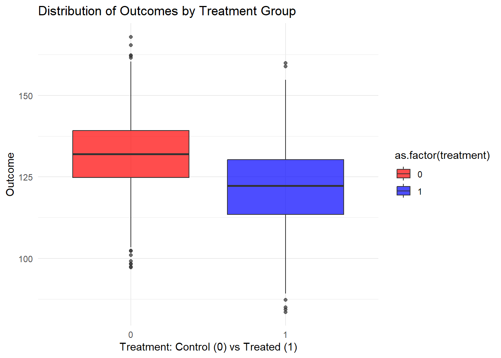

3 Observational Studies
Class materials
Slides: Module 3
Recording: Module 3, Part 1
Recording: Module 3, Part 2
Textbook reading
Supplementary reading
Greenland, S. (2003). Quantifying biases in causal models: classical confounding vs collider-stratification bias. Epidemiology, 14(3), 300–306. Additional DAG exercises provided in class
Topics covered
- The challenge of confounding in public health and medical research
- Exchangeability, positivity, and consistency
- Effect identification in observational studies
- Critical reading exercise: evaluating a published observational study
3.1 The challenge of confounding in public health and medical research
Confounding is a major challenge in public health and medical research because it can create misleading associations between exposures and outcomes. A confounder is a third variable that is associated with both the exposure and the outcome, potentially distorting the true causal relationship. For example, if we observe that people who carry lighters tend to have higher rates of lung cancer, we might wrongly conclude that carrying a lighter causes cancer. In reality, smoking is the confounding variable: smokers are more likely to carry lighters and also more likely to develop lung cancer. Without properly adjusting for confounders, studies risk producing biased estimates, leading to incorrect conclusions about risk factors, treatments, or interventions.
Addressing confounding is crucial but not always straightforward. Methods such as stratification, multivariable regression, propensity score matching, and randomized controlled trials (RCTs) are commonly used to try to adjust for or eliminate confounding effects. However, identifying all relevant confounders can be difficult, especially when dealing with observational data where randomization is not possible. Unmeasured or unknown confounders remain a constant threat to validity. Therefore, careful study design, domain knowledge, and sensitivity analyses are essential to minimize the impact of confounding and ensure more reliable and actionable public health research findings.
Example Setup Let’s say we want to study the effect of Exercise (X) on Heart Health (Y), but there’s a Genetic Factor (Z) that causes both Exercise and Heart Health. In this case, Z is a confounder, and we should adjust for it.
In this simulation we will have two models: a naive model and an adjusted model. The naive model will only regression heart health on exercise. The adjusted model will regress heart health on exercise and genetic factors, which controls for genetic factor being a confounder. Since this is simulated example, we know that the true effect of exercise on heart health is 0.8. We will see in this example that the estimated causal effect coming from the adjusted model is better than the naive model.
n <- 2000
genetics <- rnorm(n)
exercise <- 0.6 * genetics + rnorm(n)
heart_health <- 0.8 * exercise + 0.5 * genetics + rnorm(n)
df <- data.frame(heart_health, exercise, genetics)
model_naive <- lm(heart_health ~ exercise, data = df)
summary(model_naive)$coefficients["exercise", ]## Estimate Std. Error t value Pr(>|t|)
## 1.03016476 0.02112469 48.76592135 0.00000000model_adjusted <- lm(heart_health ~ exercise + genetics, data = df)
summary(model_adjusted)$coefficients["exercise", ]## Estimate Std. Error t value Pr(>|t|)
## 8.147942e-01 2.264878e-02 3.597519e+01 6.330480e-219# library(ggplot2)
naive_estimate <- summary(model_naive)$coefficients["exercise", "Estimate"]
adjusted_estimate <- summary(model_adjusted)$coefficients["exercise", "Estimate"]
estimates <- data.frame(
Model = c("Naive", "Adjusted"),
Estimate = c(naive_estimate, adjusted_estimate)
)
ggplot(estimates, aes(x = Model, y = Estimate, fill = Model)) +
geom_col(width = 0.5) +
labs(title = "Comparison of Naive vs Adjusted Estimates",
y = "Estimated Effect of Exercise",
x = "") +
geom_hline(yintercept = 0.8, linetype = 2) +
annotate("text", x = 2.45, y = 0.85, label = "True effect") +
theme_minimal() +
theme(legend.position = "none")
In this simulation, we model a situation where Genetics (Z) is a confounder that influences both Exercise (X) and Heart Health (Y). The naive model, which regresses Heart Health on Exercise without adjusting for Genetics, gives a biased estimate of the effect of Exercise (1.05). This happens because part of the observed association is actually due to Genetics, not Exercise itself. When we adjust for Genetics in the second model, the estimate of Exercise’s effect (0.84) becomes more accurate, isolating its true relationship with Heart Health. This is shown in how the bar for the adjusted graph is closer to the dotted black line, which represents the true causal effect of exercise (0.8). This example highlights how failing to account for confounding can lead researchers to overstate or misinterpret causal effects in public health and medical studies.
3.2 Exchangeability, positivity, and consistency
In causal inference, particularly when analyzing observational data, three critical assumptions must hold for estimates to reflect true causal relationships: exchangeability, positivity, and consistency. These assumptions ensure that the comparisons we make between groups are valid and that the effects we estimate correspond to real-world interventions. Without them, causal conclusions can be biased or entirely invalid.
- Exchangeability means that after adjusting for confounders, the treatment and comparison groups are similar in all relevant ways except for the exposure itself. In potential outcomes notation, this is written as:
\[ (Y(0), Y(1)) \perp W|X \]
- Positivity means that every individual has a nonzero probability of receiving each level of the exposure, regardless of their confounder values. In the notation below, the \(i\) represents that we are talking about unit \(i\). For example \(D_i\) is the treatment that unit \(i\) received. The “for any \(x \in \mathcal{X}\)” is saying that in every possible value that \(X_i\) can take, unit \(i\) could have received the treatment (or control).
\[ 0 < Pr(W_i = 1 \ | \ X_i = x) < 1 \quad \text{for any } x \in \mathcal{X} \] - Positivity is not always an assumption that is satisfied. For example, let’s say you are trying to estimate the effect of a new drug. You want to control for the patient’s sex assigned at birth (male or female) to try to estimate the causal effect. However, the drug is never given to females. Then this assumption is violated.
Stable Unit Treatment Value Assumption (SUTVA) is our last important assumption. There are two parts to SUTVA:
Consistency means that the observed outcome under the observed treatment status of unit \(i\) is the same as the potential outcome under the potential treatment status of unit \(i\). This usually occurs when there is a single well-defined treatment, such as a drug with a specific dosage.
Consistency can be violated if there are multiple versions of the treatment, usually because it is not well defined. For example, there could be a treatment that gives 50 mg of the drug and another version that gives 100 mg of the drug. Here, consistency will be violated.
In potential outcomes notation, this is:
\[ Y = (W)Y(1) + (1-W)Y(0) \]
No-interference means that the potential outcomes of unit \(i\) are independent of the treatments other units receive.
An example of when there is interference is when we are trying to test a vaccine’s effectiveness of preventing measles for an individual. Let’s say in our study, Falco receives the vaccine, and his friend Chad receives a control. Falco and Chad both interact regularly. Assume the vaccine truly reduces the risk of catching measles. Since Falco received the vaccine, he has a lower risk of catching measles, which lowers Chad’s risk of catching measles, even though Chad never received the vaccine. So Chad’s potential risk of contracting measles is a function of whether he receives the vaccine or not and whether Falco receives the vaccine or not. Thus, the no-interference assumption is violated in this case.
In potential outcomes notation, we say the potential outcome for unit \(i\) is not a function of the treatment status of another unit \(j\):
\[ Y_i(W_i) = Y_i(W_i,W_j) \quad \text{for all } j \neq i \]
In our previous simulation studying exercise and heart health, adjusting for genetics aimed to restore exchangeability by balancing genetic differences between individuals with different exercise levels. Positivity was satisfied because individuals at all levels of genetics still varied in how much they exercised. Consistency was assumed because the way we measured exercise and heart health accurately reflected the underlying causal relationship. Together, these assumptions allowed us to interpret the adjusted effect of exercise on heart health as a causal effect.
3.3 Effect Identification in Observational Studies
In observational studies, identifying causal effects is challenging because researchers do not control exposure assignments. Unlike randomized controlled trials, individuals self-select into exposure groups, leading to potential confounding. Effect identification requires careful strategies to mimic the conditions of randomization and ensure that observed associations reflect true causal relationships rather than biases from confounding or selection.
- Confounding control: Adjust for confounders through methods like regression, stratification, matching, or weighting to approximate randomization.
- Assumptions: Rely on assumptions like exchangeability, positivity, and consistency to justify causal interpretation.
- Sensitivity analysis: Explore how robust the estimated effect is to potential unmeasured confounding.
In our simulation of exercise and heart health, we identified the causal effect of exercise by adjusting for the confounding effect of genetics. Without randomization, genetics could have biased the relationship between exercise and health outcomes. By including genetics as a covariate in our model, we attempted to recreate the conditions needed for causal identification in an observational setting, relying on the assumptions of exchangeability, positivity, and consistency to interpret the adjusted exercise effect as causal.